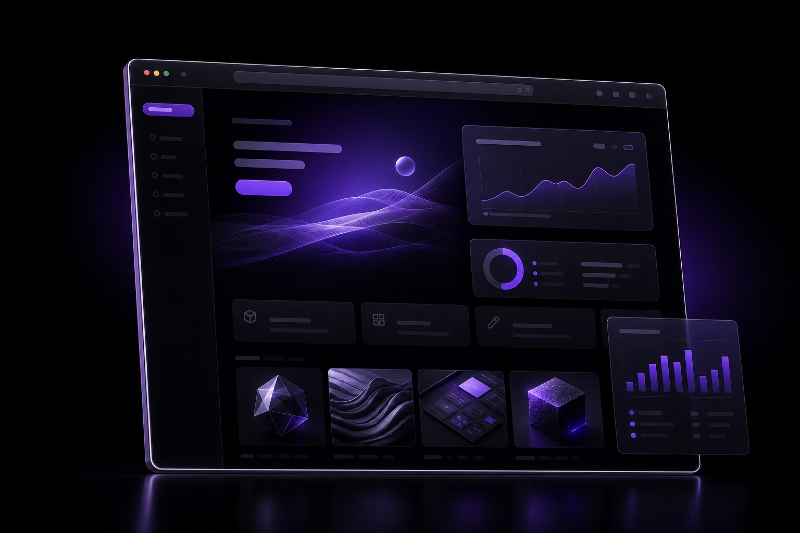

WordPress Website Design
Modern business websites designed around clear messaging, polished presentation, and practical content management.
- Business website structure
- Responsive page layouts
- Conversion-focused sections
WordPress Website Designer & Developer
I design and build clean, responsive WordPress websites using Elementor Pro, Figma, and SEO-friendly page structures for businesses, agencies, and service-based brands.

Services
Clean WordPress builds, focused landing pages, and redesigns that give your content structure, clarity, and a stronger path to conversion.
Modern business websites designed around clear messaging, polished presentation, and practical content management.
Custom Elementor Pro builds with reusable sections, clean spacing, mobile adjustments, and editor-friendly setup.
Careful translation of approved Figma designs into responsive WordPress pages that keep the intent of the design intact.
Focused page experiences that improve hierarchy, sharpen calls to action, and make existing websites feel current.
Featured Work
Placeholder case study cards built so you can duplicate each article, swap the visual, update the copy, and link to a full project page later.
Website Redesign
A cleaner service website direction with treatment page structure, booking-focused sections, FAQs, and local SEO-friendly content areas.
View Case StudyLanding Page
A sharp single-page layout with a strong hero, credibility blocks, service benefits, clear CTAs, and a simple enquiry path.
View Case StudyBusiness Website
A multi-section website concept for a service brand with clear messaging, trust signals, lead-generation sections, and scalable page structure.
View Case StudySEO Page Layout
A structured long-form page layout with headings, content blocks, FAQs, internal linking areas, and clean mobile readability.
View Case StudyResults
The focus is simple: organized pages, responsive layouts, clean build systems, and a reliable handoff that helps the website keep working after launch.
Process
A clear, collaborative workflow from the first idea to a polished website that can be reviewed, edited, tested, and launched with confidence.
I clarify the goal, audience, content, offer, and page structure so the build starts with a useful direction.
I design and build the website with careful spacing, hierarchy, responsive behavior, and Elementor-friendly editing.
I review the site before launch, clean up key details, and help prepare the website for real users.
About
I'm Nathaniel Rodriguez, a WordPress Website Designer & Developer focused on creating clean, modern, responsive websites that are easy to manage and built with real business goals in mind. I work with Elementor Pro, Figma, WordPress, and SEO-friendly content structures to help clients turn ideas into polished, functional websites.
Start a Project
Let's create a clean, professional website that looks great, works smoothly, and supports your business goals.
FAQ
Quick answers for clients, agencies, and business owners considering a WordPress or Elementor project.
I build WordPress business websites, landing pages, service pages, portfolio pages, redesigns, and SEO-friendly content layouts for service-based brands.
Yes. Elementor Pro is one of my main build tools for creating responsive, editable WordPress pages with reusable sections and clean layouts.
Yes. I can turn Figma layouts into WordPress and Elementor pages while keeping spacing, hierarchy, responsiveness, and editability in mind.
Yes. Desktop, tablet, and mobile layouts are planned and adjusted so pages remain clear, readable, and easy to use across screen sizes.
Yes. I can help with redesigns, page structure improvements, CTA placement, layout cleanup, basic SEO setup, and responsive fixes.